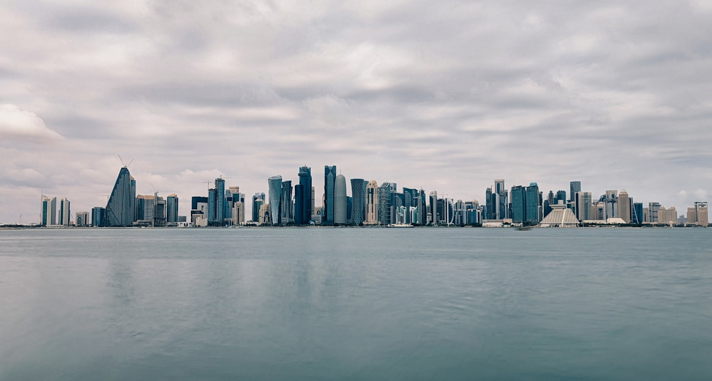
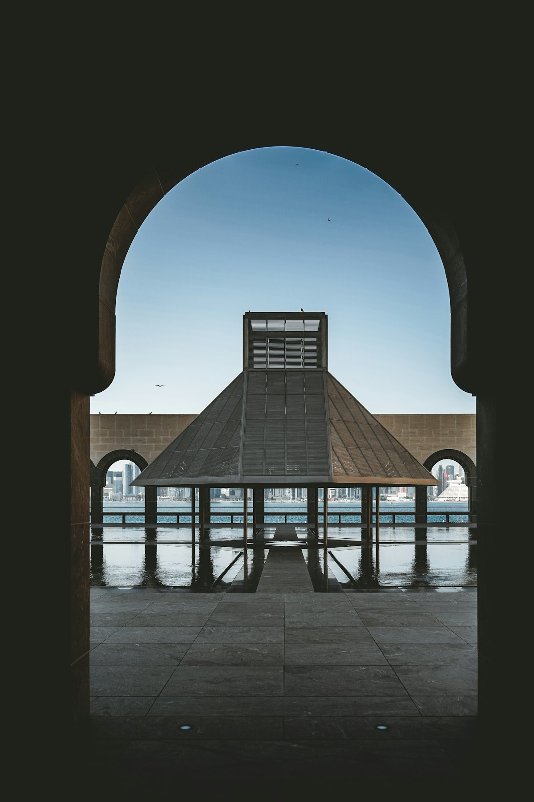
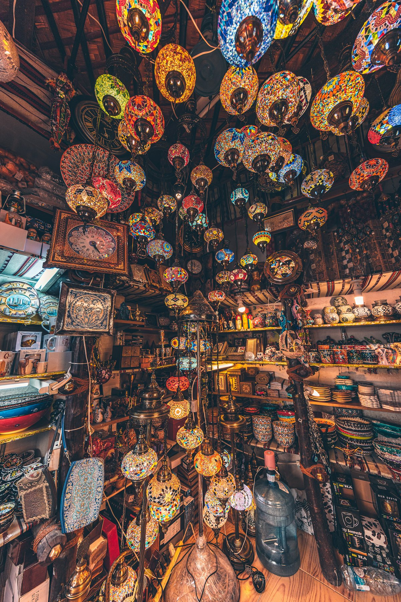
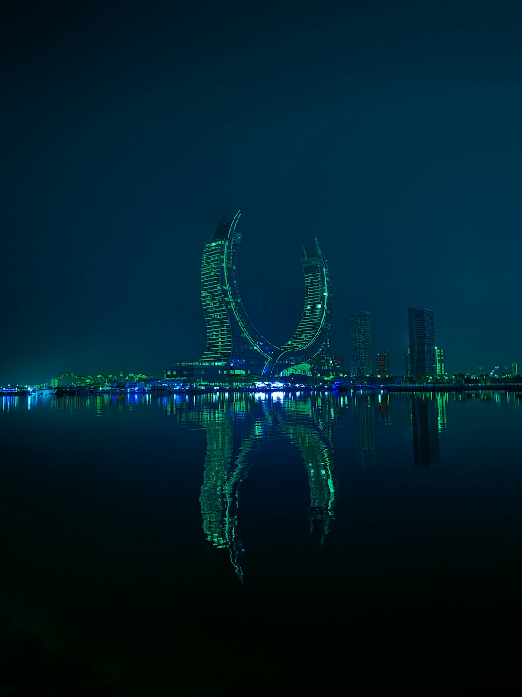
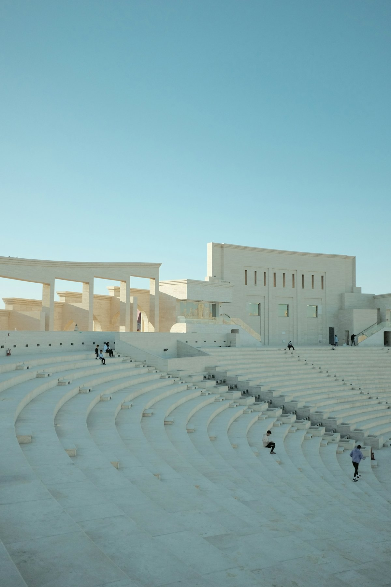
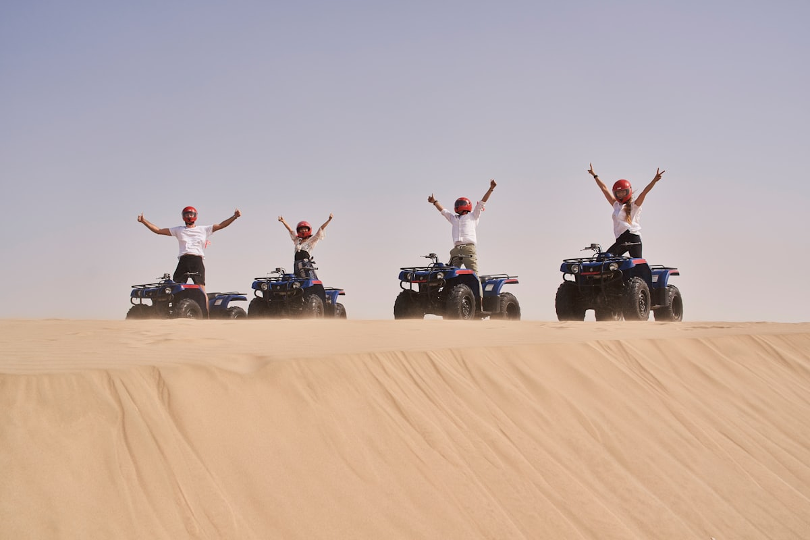
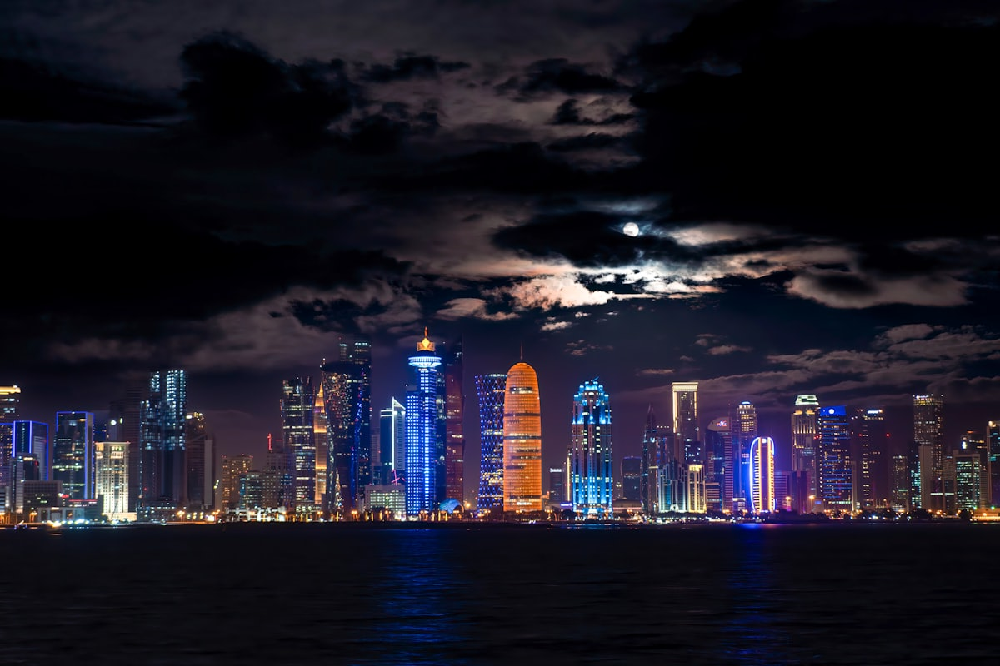
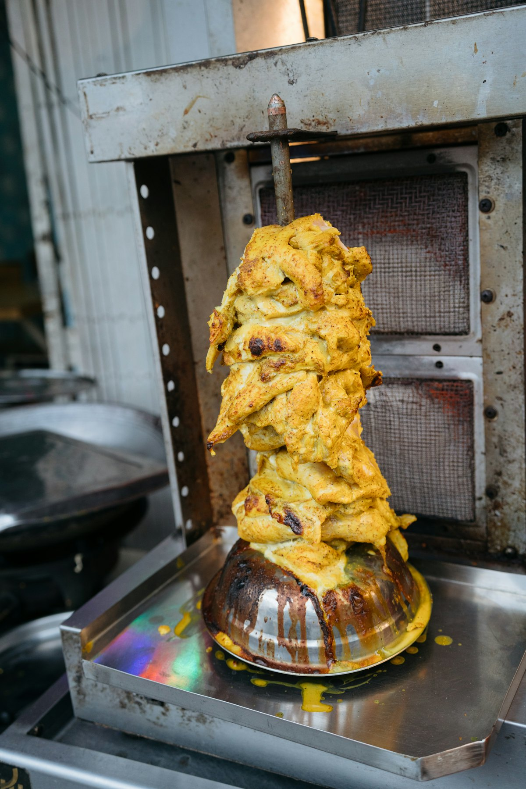

| 事项 | 结论 |
|---|---|
| 事项 | 结论 |
| 签证（最关键） | 中国护照免签 30 天（中卡互免协定），护照有效期需超过返程日 6 个月以上，入境备好返程机票与酒店订单 |
| 时差 | 卡塔尔比北京慢 5 小时（多哈 UTC+3），红眼航班抵达当天倒时差刚好 |
| 电源插座 | 电压 240V，G 型三扁脚插座（英标），国内两脚插头需带转接头 |
| 货币 | 卡塔尔里亚尔 QAR，1 QAR ≈ 1.95 元人民币；现金+信用卡+Apple Pay 均可用 |
| 行程结构 | 多哈都市 4 天（博物馆/市集/海湾）+ 沙漠冲沙 1 天 + 返程 1 天 |
| 预算（人均） | 经济 8000–12000 ／ 标准 15000–22000 ／ 舒适 35000–50000（人民币） |
| 三件提前事 | ① 订卡航往返机票（红眼航班提前 2 个月）② 订沙漠冲沙团 ③ 核对博物馆闭馆日（周三/周二） |
| 最佳季节 | 11 月–4 月 20–28°C 舒适；5–9 月白天 40°C+，酒店 6–7 折但只能室内+傍晚出行 |
以下为 6 天 5 晚的推荐节奏：前 4 天按「博物馆日 → 市集日 → 海湾日 → 历史日」轮转，第 5 天下午出发冲沙（避开正午高温），最后一天购物返程。每日主景点 ≤2 个，交通以地铁红线 + 打车为主。
| 日期 | 行程 | 过夜地 | 主题 |
|---|---|---|---|
| D1 抵多哈 | 北京✈多哈（卡航直飞约 9h），落地寄存行李，下午滨海大道+西湾天际线，晚上瓦其夫市场 | 多哈·西湾 | 抵达+预热 |
| D2 | 伊斯兰艺术博物馆 MIA（50 QAR）→ 滨海大道午餐 → 瓦其夫市场深度逛（香料/黄金/猎鹰集市） | 多哈 | 艺术+市集 |
| D3 | 珍珠湾码头 → 卡塔拉文化村（画廊/清真寺/海滩）→ 卡塔拉海边晚餐看日落 | 多哈 | 海湾悠闲 |
| D4 | 国家博物馆 NMoQ（25 QAR）→ 姆什莱布老城 → 教育城园区（可选）→ 瓦其夫夜市 | 多哈 | 历史+现代 |
| D5 | 沙漠冲沙：4x4 冲沙 → 内陆海 Khor Al Adaid → 滑沙/骑骆驼 → 营地烧烤晚餐 | 多哈 | 沙漠日 |
| D6 返程 | 上午自由活动（Villaggio 购物/咖啡），下午到哈马德机场，多哈✈北京 | — | 收尾 |
以下为 6 天全程的逐小时执行时间线，可当作「当天打开照着走」的清单。标注 ※ 的可选项视体力与天气取舍。
| 时间 | 事项 |
|---|---|
| 01:45–05:55 | 卡航 QR893：北京大兴✈多哈哈马德机场（直飞约 9h，红眼航班机上睡一觉） |
| 06:30–09:00 | 入境（免签 30 天，备好返程机票与酒店订单）→ 地铁红线到西湾 / 打车约 20min 到酒店 |
| 09:30–13:00 | 入住酒店放行李（多哈酒店一般 14:00 后入住，先寄存）+ 补觉倒时差（时差 -5h） |
| 15:00–17:30 | 滨海大道 Corniche（免费）：7 公里海滨步道，看对岸西湾天际线，午后光照渐弱更好走 |
| 18:00–21:30 | 瓦其夫市场（免费）：傍晚 6 点后最热闹，香料街、阿拉伯咖啡馆、猎鹰集市散步，晚餐市集烤串+卡拉克奶茶 |
| 时间 | 事项 |
|---|---|
| 09:00–11:30 | 伊斯兰艺术博物馆 MIA（成人 50 QAR ≈ 100 元）：贝聿铭封山之作，1400 年伊斯兰艺术馆藏，周三闭馆 |
| 11:30–13:00 | 博物馆公园散步 + 滨海大道午餐（海边汉堡/阿拉伯餐厅） |
| 14:00–17:30 | 瓦其夫市场深度逛（免费）：黄金集市（南侧）、猎鹰集市（西侧，看猎鹰与驯鹰人）、香料与椰枣店 |
| 18:00–20:00 | 瓦其夫传统巷子晚餐：玛布司香料焖饭 / 沙威玛，饭后水烟店看人流 |
| 20:00–21:30 | 市场夜景灯光散步，买伴手礼（阿拉伯香水、椰枣、手工铜壶 dallah） |
| 时间 | 事项 |
|---|---|
| 09:30–12:00 | 珍珠湾 The Pearl-Qatar（免费）：人工潟湖岛屿，威尼斯式运河+码头游艇，逛逛精品店 |
| 12:00–13:30 | 珍珠湾码头区午餐：意大利餐/海鲜，配阿拉伯咖啡 |
| 14:30–17:30 | 卡塔拉文化村（免费）：金色露天剧场、蓝色清真寺、艺术画廊、海边集市，海滩入场 10 QAR |
| 17:30–19:00 | 卡塔拉海边看日落，周边高分海鲜餐厅晚餐（周五/周六人多，提前订座） |
| 时间 | 事项 |
|---|---|
| 09:00–11:30 | 国家博物馆 NMoQ（成人 25 QAR ≈ 50 元）：让·努维尔「沙漠玫瑰」造型，卡塔尔从沙漠到现代的故事，周二闭馆 |
| 11:30–13:00 | 博物馆咖啡厅/周边午餐 |
| 14:00–16:00 | 姆什莱布老城 Msheireb（免费）：重建的历史街区，四座遗产博物馆+现代精品建筑群 |
| 16:30–18:30 | 教育城 Education City（免费）：卡塔尔基金会园区，3-2-1 奥林匹克与体育博物馆（可选） |
| 19:00–21:00 | 瓦其夫市场夜市收尾 或 滨海大道夜景灯光散步 |
| 时间 | 事项 |
|---|---|
| 14:00 | 酒店接送出发（沙漠冲沙一般下午出发，避开正午高温） |
| 15:00–16:30 | 4x4 越野冲沙：冲沙丘、滑沙板、沙丘拍照点，司机为持证沙漠向导 |
| 16:30–18:00 | 内陆海 Khor Al Adaid（免费，须 4x4 到达）：沙漠与海相接的奇观，可下水/拍照 |
| 18:00–20:00 | 贝都因风格营地：骑骆驼、阿拉伯咖啡+椰枣、烧烤晚餐（可升级私人团/过夜帐篷） |
| 20:30 | 返程回多哈（全程含接送约 7–8h） |
| 时间 | 事项 |
|---|---|
| 08:30–11:00 | 自由活动：Villaggio 购物中心（威尼斯运河主题）或卡塔拉海滩晨光，买椰枣/藏红花伴手礼 |
| 11:00–12:00 | 午餐：最后一顿卡拉克奶茶+沙威玛 |
| 12:30–14:00 | 退房，打车到哈马德机场（建议提前 3 小时到） |
| 18:40–次日 | 卡航 QR892：多哈✈北京大兴（直飞约 9h，次日清晨抵京） |
必去（必去）/ 顺路（顺路）/ 可跳过（可跳过）。

必去
必去
必去
必去
必去
顺路
顺路图片为 Unsplash 主题图（多哈天际线、伊斯兰艺术博物馆、瓦其夫市场、珍珠湾、卡塔拉、沙漠冲沙、城市夜景、阿拉伯美食），用于页面配图。更多免费景点：姆什莱布老城、教育城园区、Aspire 公园、瓦其夫黄金集市。
点击左侧节点可在地图上定位；点击地图 marker 会高亮对应节点。坐标为 WGS-84 转 GCJ-02 纠偏后标注。
以下为单人、不含购物的估算，人民币计价；出发地基准北京。汇率按 1 卡塔尔里亚尔 ≈ 1.95 元人民币估算。往返机票按卡塔尔航空直飞淡季 4000–6000 元、旺季 6000–7500 元计。
| 项目 | 经济（8000–12000） | 标准（15000–22000） | 舒适（35000–50000） |
|---|---|---|---|
| 往返机票 | 淡季经济舱 4000–5000 | 卡航直飞 5500–7500 | 灵活舱/商务 12000–20000 |
| 住宿（5 晚） | 青旅/经济酒店 200–350/晚 | 西湾 4 星 700–1000/晚 | 5 星海滨度假 2500–4500/晚 |
| 沙漠冲沙+门票 | 拼团冲沙约 600 | 拼团+全部门票约 1500 | 私人冲沙+奢华体验 3000–5000 |
| 市内交通 | 地铁+公交 200–400 | 打车+地铁 600–900 | 包车/专车 2000–3000 |
| 餐饮（6 天） | 市集+快餐 500–800 | 餐厅+市集 1200–1800 | 高端餐厅+酒店自助 3000–5000 |
带娃推荐：卡塔拉海滩（10 QAR）+ MIA 儿童互动区 + 国家博物馆互动展 + Villaggio 商场室内娱乐；沙漠冲沙选私人团（节奏可控、可随时停）。6–9 月带娃慎选户外行程，全程室内化。
最佳季 11 月–4 月：20–28°C，户外舒适，但机票酒店贵 30–50%；5–9 月白天 40°C+，酒店常打 6–7 折，适合「泡酒店 + 逛室内博物馆 + 傍晚出行」的玩法。斋月（2026 年约 2–3 月）餐厅白天歇业、夜晚氛围独特。
| 方式 | 时长 | 参考价 | 备注 |
|---|---|---|---|
| 卡航直飞（推荐） | 北京大兴⇄多哈哈马德约 9h | 往返 4000–7500 元 | 去程 QR893 凌晨 01:45 起飞 05:55 落地；返程 QR892 傍晚起飞次日清晨到 |
| 转机 | 12–18h | 3000–5000 元 | 经广州/上海/香港/迪拜/曼谷，便宜但绕路 |
| 其他航司/代码共享 | 9–11h | 4000–7000 元 | 国航、东航等经停或代码共享班次，班次少需比价 |
| 区域 | 价格/晚 | 优点 | 短板 |
|---|---|---|---|
| 西湾 West Bay / 滨海大道 | 4 星约 700–900 元（$100–120） | 天际线景观、地铁直达、商务酒店多 | 旺季贵，餐饮偏商务 |
| 老多哈 Old Doha / 瓦其夫 | 青旅 180–300 / 经济酒店 300–600 | 步行到瓦其夫市场与文化核心，最便宜 | 设施偏旧，离地铁稍远 |
| 珍珠湾 The Pearl | 高端 1000–3000 元 | 码头海景、运河餐厅、精品酒店 | 远离地铁，出门打车为主 |
| 卡塔拉文化村周边 | 中高端 700–2000 元 | 近海滩与文化场馆，带娃友好 | 离市中心 15–20 分钟 |
| 姆什莱布 Msheireb | 设计酒店 800–1800 元 | 老城新貌、博物馆集群、安静 | 选择相对少 |